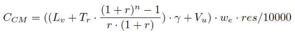
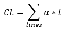
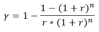
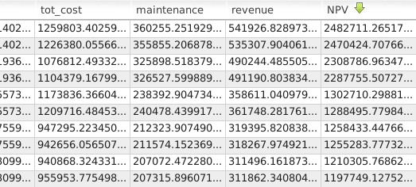
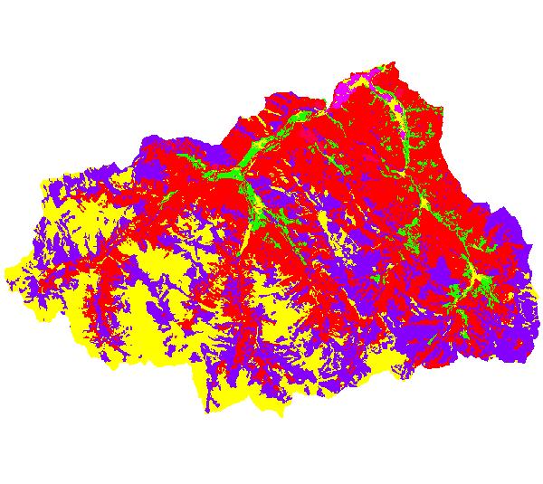

- Compensation cost:
This cost represents the value to compensate land owners in case of plants components implementation according to current Italian legislation. It is calculated with this formula:

where Lv is a raster map with the land use value [currency/ha];Once the calculation is made, a new column with the compensation cost is added in the table of the input map with potential plants. A raster map with the compensation cost can also be computed, as well as a raster map with the value upper part of the soil (see Optional section).
Tr is a raster map with the tributes [currency/ha];
Vu is a raster map with the value upper part of the soil [currency/ha];
r is a scalar with the interest rate (default value: 0.03);
n is the life of a hydropower plant [year] (default value: 30);
γ is a scalar (default value: 5/4);
we is a scalar with the average width excavation [m] (default value: 2);
res is a scalar with the raster resolution
The Vu raster map is computed with the formula:
where Sv is a raster map with the stumpage value [currency/ha];
Rot is a raster map with the value rotation period per land use type [year];
Y is a raster map with the average year [year]
The user can directly add the maps Lv, Tr, Sv, Rot and Y as inputs. Otherwise, the maps can be computed using the land use raster map and reclassifying the values with the module r.reclass. The program creates the reclassified maps if the user provides the input text files for each category (the input data is the path of the text file). Here is an example of a text file to create the landvalue raster map, the costs are in currency/ha:
1 = 0 rocks, macerated, glaciers 2 = 0 urbanized areas, infrastructure 3 = 0 shores 4 = 0 waters 5 = 200 gardens 6 = 4000 mining areas 7 = 2000 agricultural areas 8 = 1500 meadows 9 = 1000 areas with predominantly pastoral value 10 = 3000 forestry land
- Excavation cost:
This cost concerns the works of digging to implement channels. It is calculated as followed:
where S is a raster map with the slope in [%];If the user hasn't got the raster maps Ψ and Φ, the latter can be computed from the land use raster map if the user provides a text file with the reclassification values (from land use value to excavation cost (min or max)). It is the same principle as the one explained above for landvalue, tributes, stumpage, rotation period per land use type and average age.
Ψ is a raster map with values of minimum excavation costs [currency/mc];
Φ is a raster map with values of maximum excavation costs [currency/mc];
w is the width of the excavation [m] (default value: 2);
d is the depth of the excavation [m] (default value: 2);
l is the length of the excavation [m] which depends on the channels lengths
The user can choose to put a slope limit (Slim) [%] above which the cost will be equal to the maximum cost.
Then, a new column with the excavation cost is added in the table of the input map with potential plants. A raster map with excavation cost can also be computed (see Optional section).
- Electro-mechanical cost:
It is the cost of the electro-mechanical equipment which includes the turbine, the alternator and the regulator. It is a high percentage of a small hydropower plant budget (around 30% and 40% of the total sum).
We use the Aggidis et al. formula which calculates this cost thanks to the values of power and head:
CEM = γ * powerα * headβ + c where power is the power of the plant [kW];A new column with the electro-mechanical costs is added in the table of the input map with potential plants.
head is the head of the plant [m];
α is a power coefficient (default value: 0.56);
β is a head coefficient (default value: -0.112);
γ is a coefficient (default value: 15600);
c is a constant (default value: 0)
- Supply and installation cost for pipeline and electroline:
This is the sum of the supply and installation costs for the derivation channel, the penstock (both compose the pipeline) and the electroline which links the transformer near the turbine to the existing grid. The formula is the following:
 where α is the supply and installation costs [currency/m] (default value for pipeline: 310 Euro/m, and for the electroline 250 Euro/m);- Power station cost:
l is the length of the line [m], the pipeline length is found in the structure map and the electroline length is computed thanks to the grid vector map
It concerns the construction cost of the building composing the power station. It is considered as a percentage of the electro-mechanical cost:
CST = α * CEM where α is as default 0.52
- Inlet cost:
It concerns the construction cost of the water intake structure. It is considered as a percentage of the electro-mechanical cost:
CIN = α *EM where α is as default 0.38
where CCM is the [currency];α and β are factors which offset the underestimation of this total cost. Indeed, some other costs have to be taken into consideration but it's hard to make a general assessment because they are specific for each plant. Moreover, for each plant realization there are unexpected events (hindrances) which make the implementation more complex and expensive.
CL is the Supply and installation cost for pipeline and electroline [currency];
CEX is the Excavation cost [currency];
CEM is the Electro-mechanical cost [currency];
CST is the Power station cost [currency];
CIN is the Inlet cost [currency];
CGRD is the Grid connection cost, (default is 50000 Euro), that includes the easement indemnity;
α is the factor to consider general expenses (default is 0.15);
β is the factor to consider hindrances expenses (default is 0.10)
where power is the power of the plant [kW];The yearly revenue corresponds to the money gained selling all the electricity the plant produces in a year. It is simply calculated as the product of the power produced in a year by the price of the electricity (including some coefficients):
α is a power coefficient (default value: 3871.2);
β is a power coefficient (default value: 0.45);
c is a constant (default value: 0)
where η is the efficiency of the electro-mechanical components (default value: 0.81);
power is the installed power of the plant [kW];
price is the energy price [currency/kW] (default value: 0.09 Euro/kW);
yh is the yearly operation hours of the plant [hours] (default value: 6500);
α is the coefficient to transform installed power to mean power (default value: 0.5);
c is a constant (default value: 0)
where revenue is the yearly revenue value [currency/year];More concretely, the program computes the following results:
maintenance is the yearly maintenance value [currency/year];
Total cost is the total cost of the plant [currency];
n the number of years of the plant [year] (default value: 30);
γ is a coefficient which assesses the cost of interest and amortization. It is defined as:

where r is the interest rate (default value: 0.03)
- the input map with the structure of the plants has an updated table with the different costs of construction and implementation and their sum (tot_cost)
- the created output map shows the structure of the potential plants with a re-organized table. The latter doesn't make the difference between derivation channel and penstock. Each line gives the intake_id, plant_id, side (structures are computed on both sides of the river), power (kW), gross_head (m), discharge (m3/s), tot_cost (total cost for construction and implementation), yearly maintenance cost, yearly revenue, net present value (NPV) and max_NPV. The structure of potential plants is given for each side of the river, max_NPV is 'yes' for the side with the highest NPV and 'no' for the other side.
- the input map with the segments of the plants has an updated table with the total cost, yearly maintenance cost, yearly revenue and the net present value. The parameter "segment_basename" (in input column) allows to add a prefix at the column names in order to show the results for different cases in the same table without overwriting the columns.
- in the Optional section, there is the possibility to create three raster maps showing the compensation, excavation and upper part of the soil values
r.green.hydro.financial plant=potentialplants struct=techplants struct_column_head=net_head landuse=landuse rules_landvalue=/pathtothefile/landvalue.rules rules_tributes=/pathtothefile/tributes.rules rules_stumpage=/pathtothefile/stumpage.rules rules_rotation=/pathtothefile/rotation.rules rules_age=/pathtothefile/age.rules slope=slope rules_min_exc=/pathtothefile/excmin.rules rules_max_exc=/pathtothefile/excmax.rules electro=grid output_struct=ecoplants compensation=comp excavation=exc upper=upper
- ecoplants which shows the structure of the potential plants. The table contains these four columns (total cost, maintenance cost, revenue and NPV):

table of the output raster map ecoplants
The same columns are added for the input map with the segments (potentialplants). In the table of the input map with the structure (techplants), the different costs which compose the total cost are added in columns (but not the four previous values).
- comp which shows the compensation values (in currency) for each land use:

output raster map with compensation values
- upper which shows the values of the upper part of the soil (in currency) for each land use
- exc which shows the excavation value (in currency) for each land use
These two last maps look like comp, but with their corresponding values.